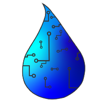
AquaGator
Autonomous Water-Quality Robotics
A field-deployed underwater robot platform for longitudinal monitoring of lake water quality, positioned to scale from local deployments to networked, near real-time environmental intelligence through the PA Science DMZ.
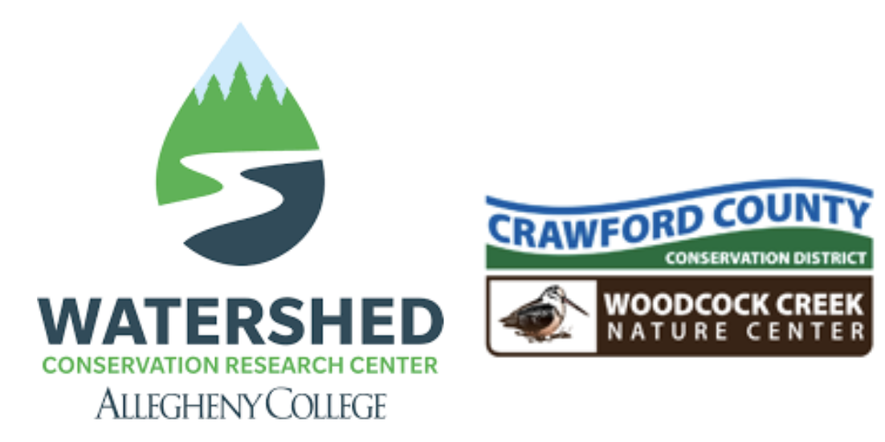
Monitoring Gap
Blooms
NW PA lakes face recurring toxic cyanobacteria outbreaks that threaten ecosystems and human health.
Current reality: Manual sampling is sparse in both time and depth, missing the dynamics that drive bloom formation.
Data Gap
Most water-quality monitoring occurs at the surface. Critical dynamics in the water column go unseen.
Research question: How does dissolved oxygen (DO) vary with depth throughout the year?
End user: The French Creek Valley Conservancy (FCVC) needs reliable, depth-resolved water quality data to assess ecosystem health and guide lake management. Current manual methods cannot provide this affordably or at scale.
Dissolved Oxygen (DO)
Depth and Temperature Variation
DO levels change significantly with depth within the water column and are closely tied to water temperature, not just surface conditions.
Biological Impact
DO directly affects respiration and reproduction in aquatic organisms. Low-oxygen zones limit the resources available to larger predators.
Habitat Mapping
Profiling DO at multiple depths reveals where ideal species habitat exists within the water column, enabling targeted conservation decisions.

AquaGator Design
Physical Platform
- PVC pipe frame for structure and buoyancy
- 4-motor design for vertical motion control
- 50 ft tether to dock for power and control
Two Robots Deployed
- Robot 1: 30 ft (9 m) — deep-column profiling
- Robot 2: 15 ft (4.5 m) — nearshore and shallow surveys
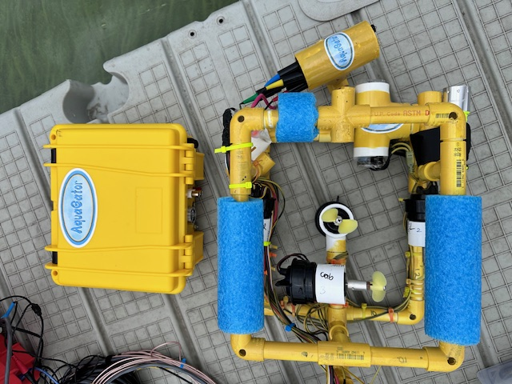

Sensor Suite
Atlas Scientific sensors: pH, Dissolved Oxygen, Conductivity (EC), ORP, and Temperature
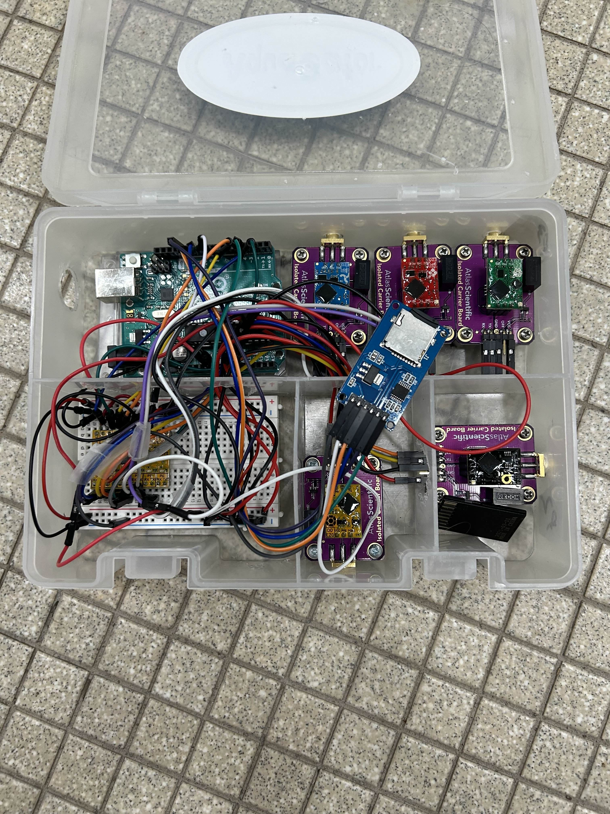
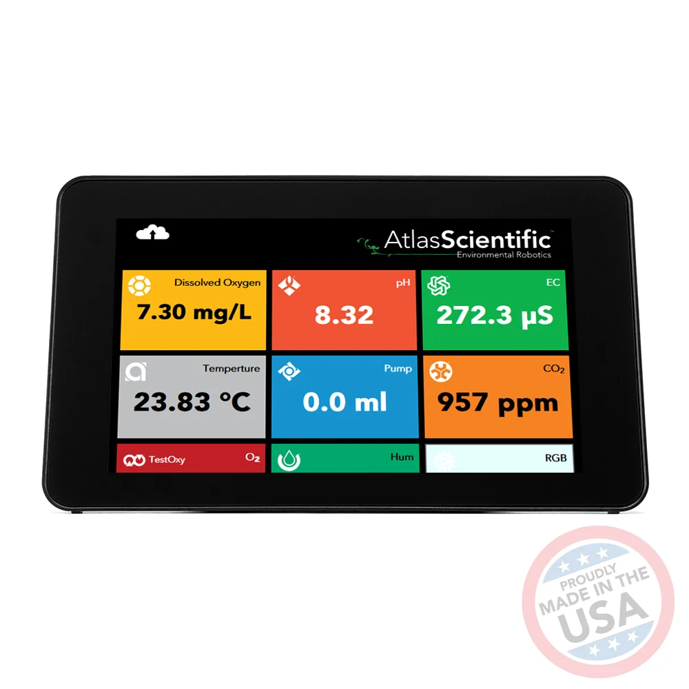
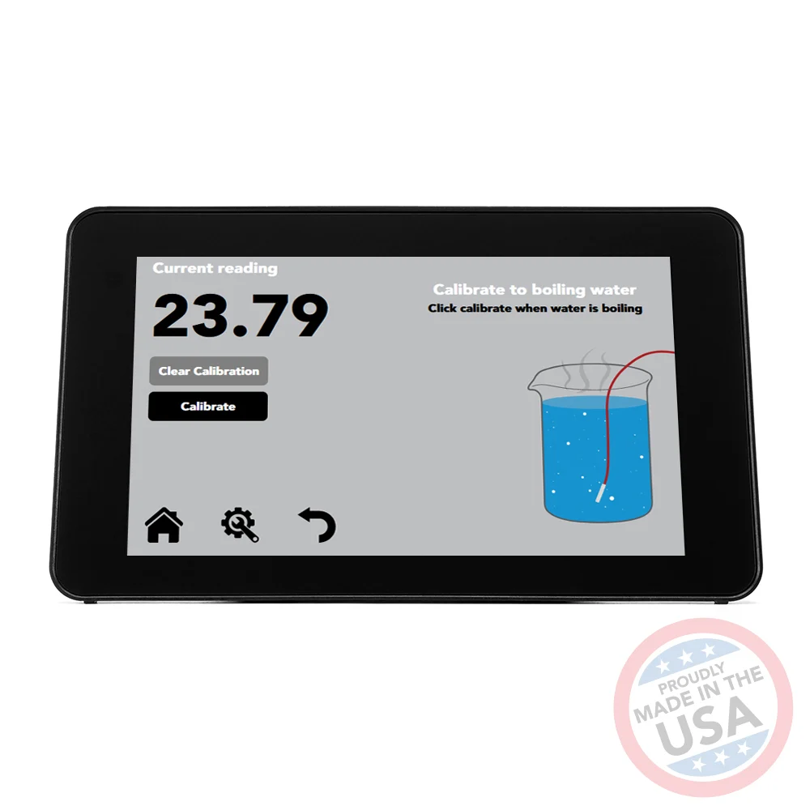
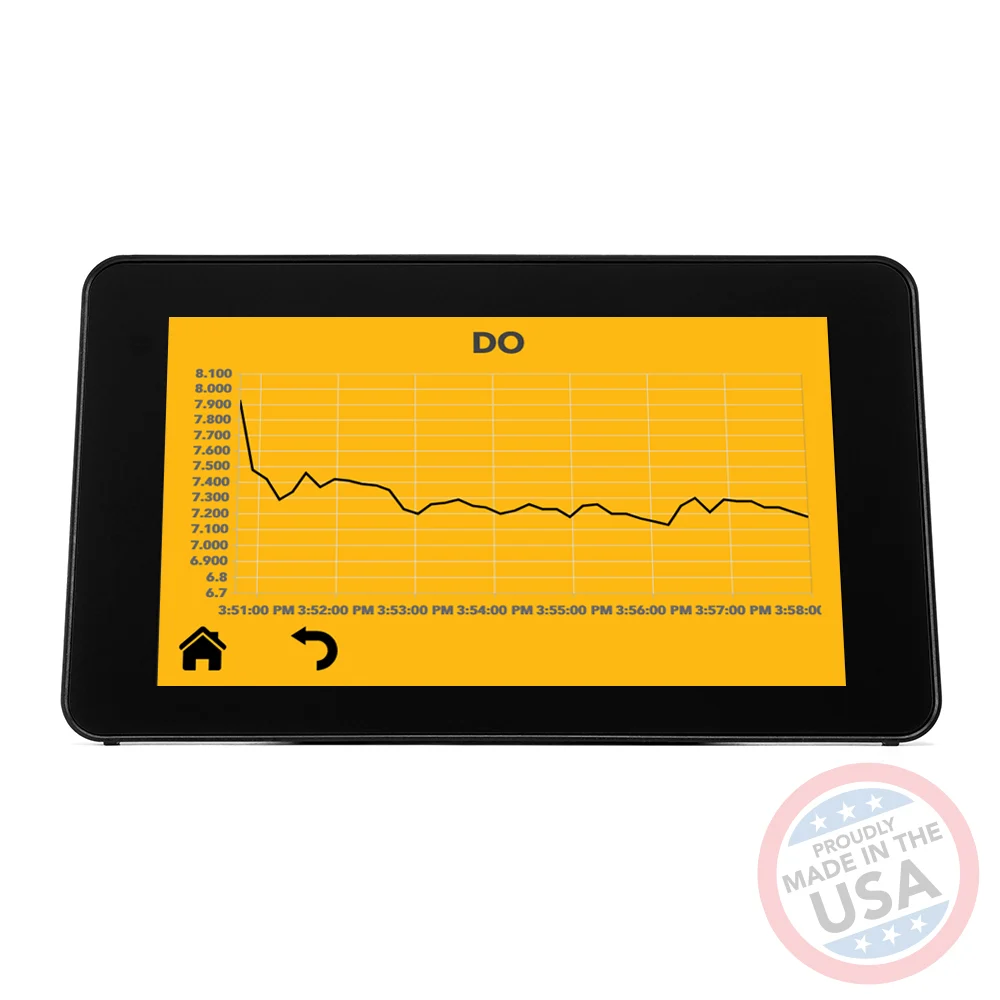
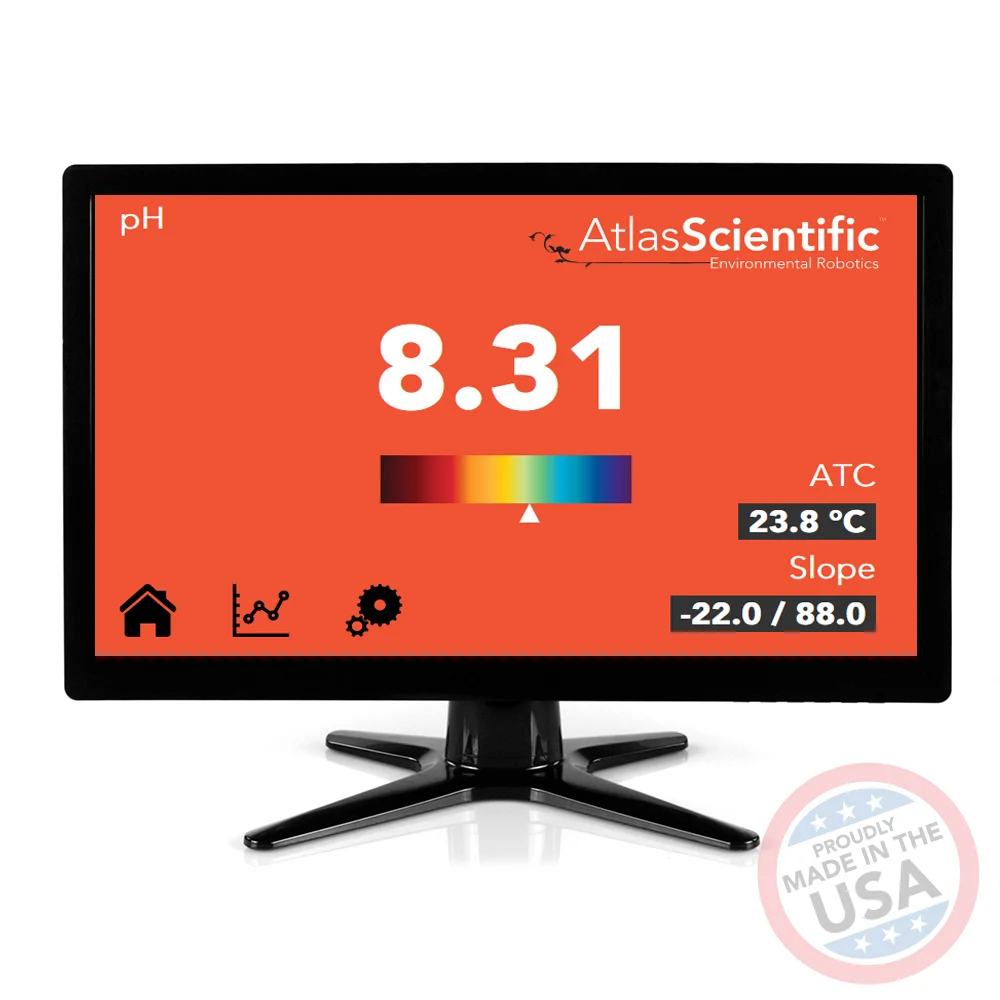
AquaGator Capabilities
Remote and Autonomous Operation
Supports both manual remote control and fully autonomous dive missions without operator intervention.
User-Specified Depth Targeting
Operators define target depths; the robot autonomously reaches and holds position for data collection at each waypoint.
Autonomous DO Variation Detection
Continuously profiles dissolved oxygen with depth, autonomously identifying zones of hypoxia or stratification within the water column.
Camera
Onboard camera enables passive wildlife monitoring and automated species detection during dive missions.
Mission Control
User-Specified Input
- Target depth via serial command (0.1 - 10.0 m)
- Mission profile selection - pre-set or custom depth sequence
- Motor power and hold duration tuning
- Real-time mid-mission control: change depth or surface immediately
Continuous Autonomous Movement
- Autonomously travels through a user-defined depth sequence
- Descends to each target depth and pauses to collect sensor data
- Continues to the next depth without any operator input
- Completes the mission or responds to interrupt commands
DO Variation Detection
Primary Ecosystem Indicator
DO is the key signal for aquatic health — low-oxygen zones directly restrict habitat for fish and aquatic life.
Depth-Linked Profiling
The robot maps DO from surface to floor, revealing stratification layers invisible to surface sensors.
Motion Linked to Sensing
AquaGator links depth control to DO readings, autonomously flagging zones where DO drops below critical thresholds.

Data Retrieval
MicroSD card or live USB transfer to lab, processed via Python (Pandas, NumPy, Matplotlib)
Multiple sensors × high-frequency sampling
Physical retrieval limits deployment cadence
Pool and Field Testing
Pool Testing
- Depth sensor accuracy and stability
- Motor control response at depth
- Hold-position logic and state machine
Field Testing
- Sensor accuracy in open-water conditions
- Motor function in non-controlled environments
- Buoyancy and tether handling on dock
- Multi-mission endurance runs
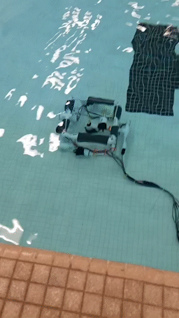
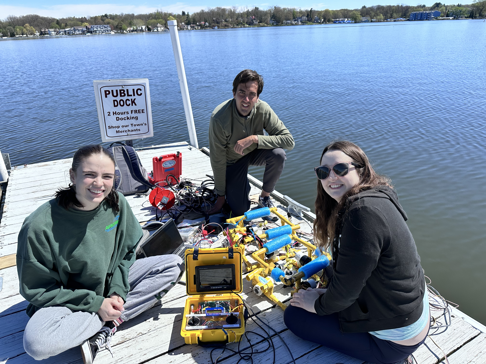
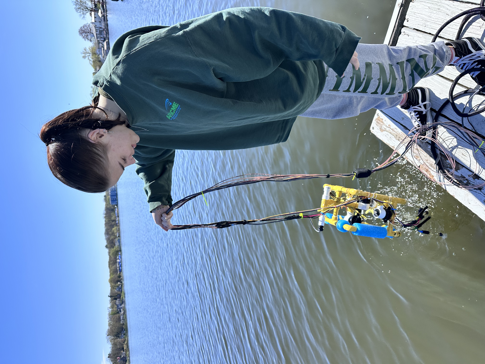
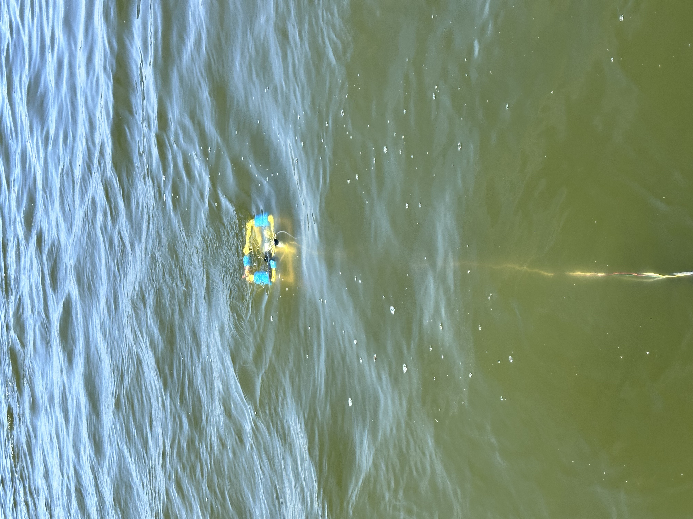
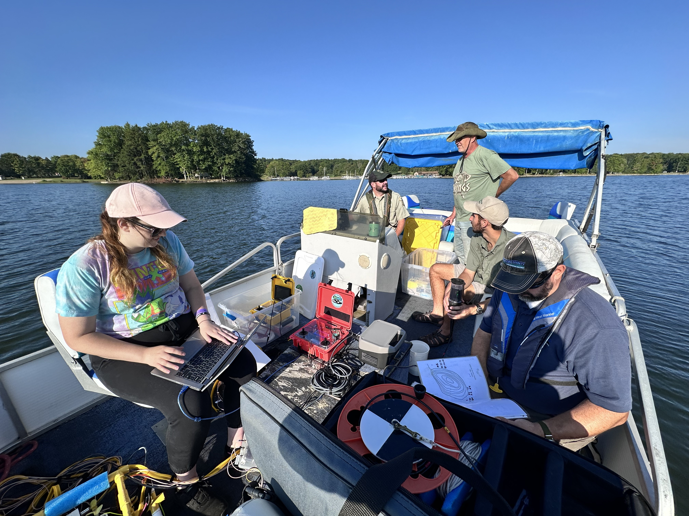
Where We Lose Time and Insight
Physical Data Movement
- Field data physically carried back to lab after each mission
- Days to weeks between collection and analysis
- Difficult to issue timely alerts to conservation partners
Limited Connectivity
- No remote access today — tethered operation only
- Limited deployment frequency and remote-site coverage
- Starlink + campus DMZ can enable near real-time monitoring
The transformation: NSF CC* PA Science DMZ funding provides high-bandwidth connectivity, HPC storage, and campus infrastructure to close these gaps.
Future Work
Smaller, Untethered Design
- Reduced form factor for easier transport and deployment
- Wireless operation — eliminate or minimize tether constraint
GPS Integration
- Precise location tagging for every water-quality measurement
- GPS-guided waypoint navigation and georeferenced data maps
Longitudinal Data Collection
- Multi-season and multi-year datasets for trend analysis
- Establish DO baselines to track environmental change over time
Real-Time Streaming & Analytics
- Live data to campus HPC storage via Starlink
- ML-based DO anomaly detection and automated partner alerts